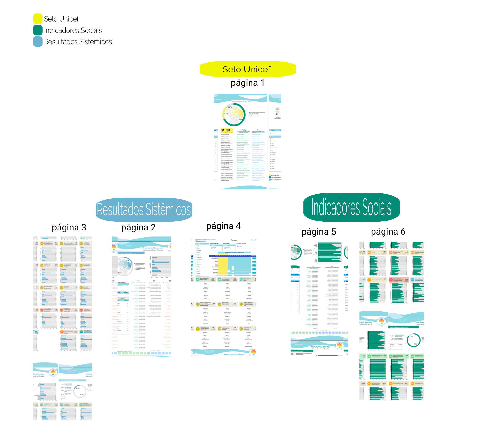
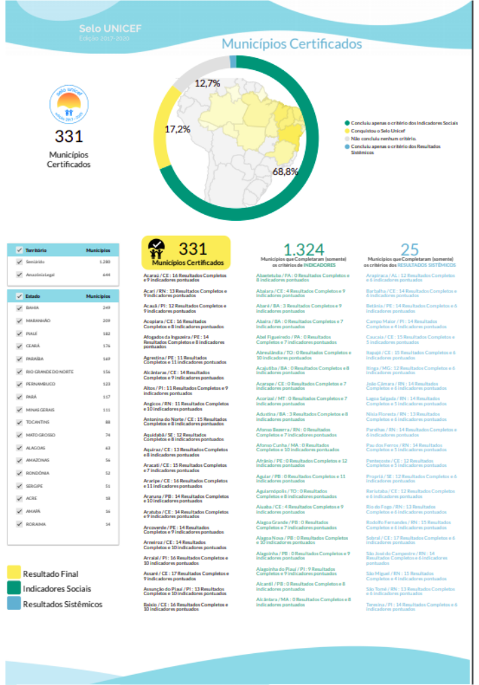
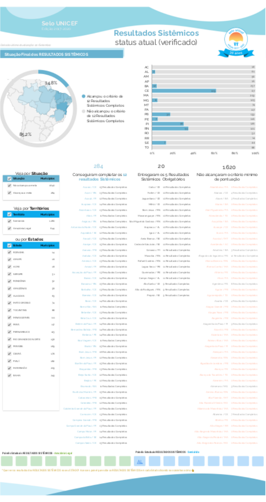
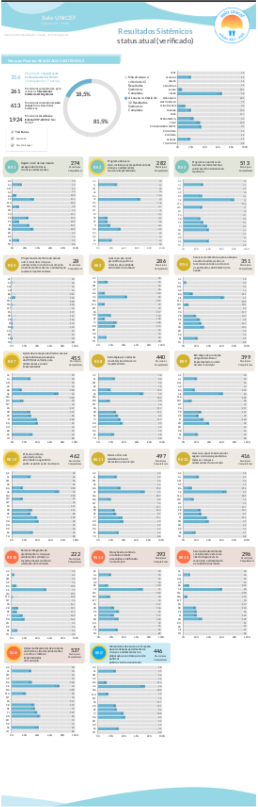
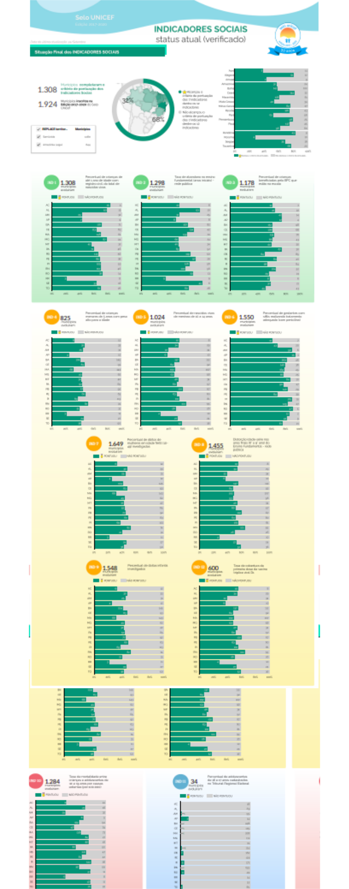
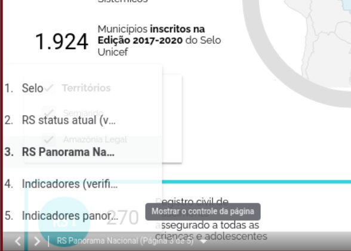

Eles estão interligados em conceito. Mas podem ser separados em visualizações diferentes
Pág. 1
Quem certificou-se porque completou todas os critérios dos resultados sistemicos & dos indicadores sociais.
link diretoPág. 2
Quantos critérios dos resultados sistêmicos cada município completou. Com busca por município e filtros por Estados e/ou territórios.
link diretoPág. 3
Panorama NACIONAL de engajamento de cada um dos Resultados Sistêmicos do selo em todos os estados participantes. Com filtro por Território e tabela de status de cada município envolvido no recorte.
link diretoPág. 4
Quantos critérios dos Indicadores Sociais cada município completou. Com busca por município e filtros por Estados e/ou territórios.
link diretoPág. 5
Panorama NACIONAL de engajamento de cada um dos Indicadores Sociais do selo em todos os estados participantes. Com filtro por Território
link diretoPS:: Em qualquer uma das páginas é possível acessar os outros via menu INFERIOR à esquerda ( quase invisível -- mas existe)
